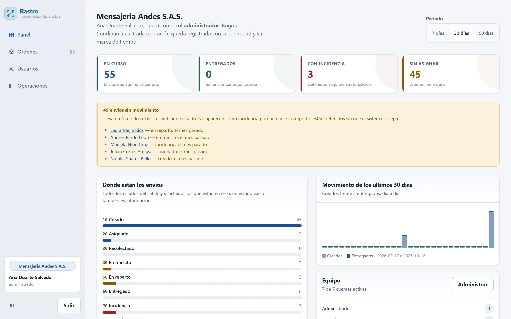
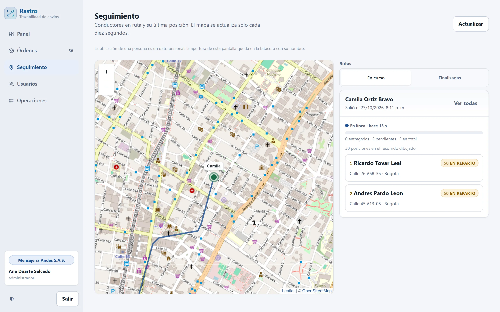
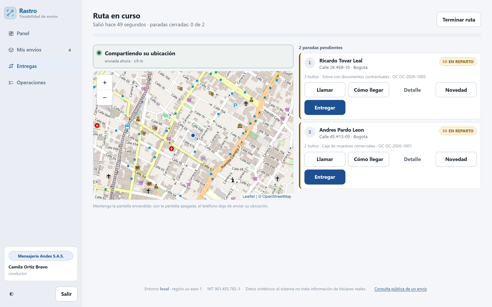
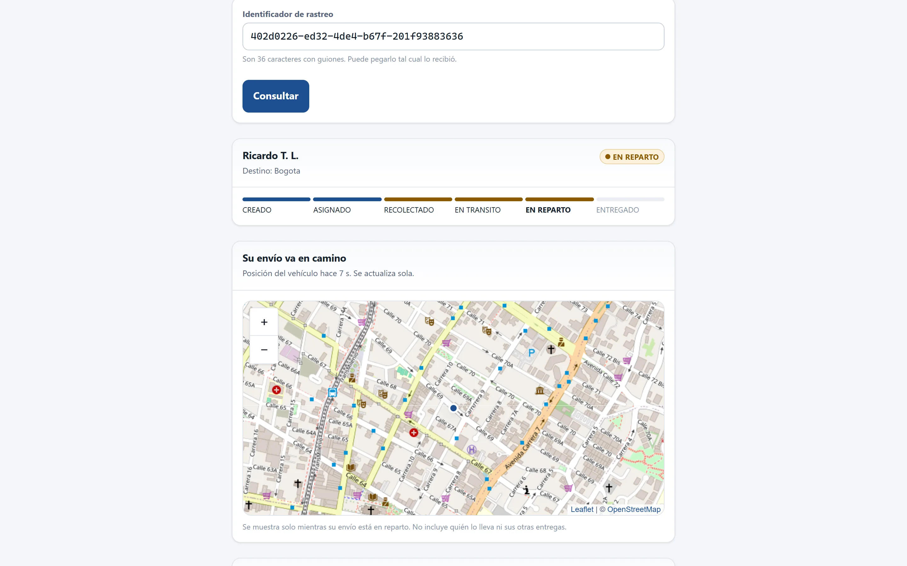
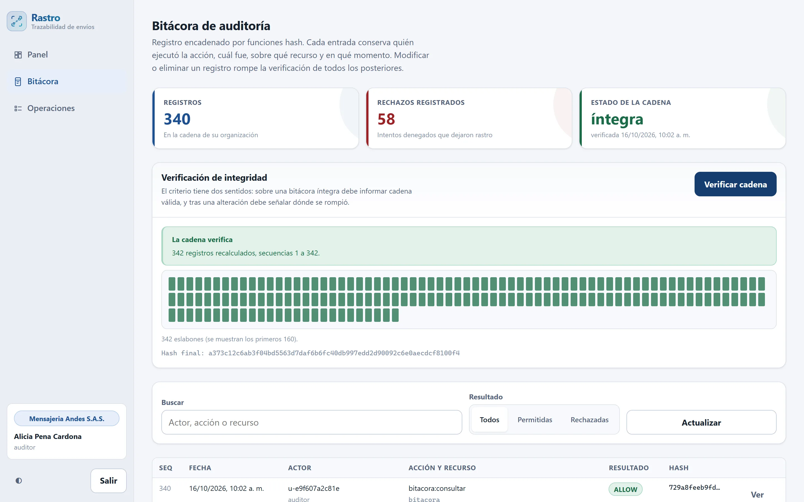

1Problema
En una mensajería urbana pequeña, el estado de un envío vive repartido entre:
Nadie puede decir quién cambió el estado, cuándo y con qué respaldo.
¿Cómo registrar de forma verificable cada cambio de estado, con su responsable y su evidencia, sobre servicios gestionados en la nube y con los permisos y el presupuesto de un entorno educativo?
2Objetivo y método
Objetivo general. Desarrollar sobre servicios gestionados de AWS un sistema que registre de forma verificable el ciclo de vida de cada envío, con acceso por rol, aislamiento entre organizaciones y evidencia de entrega cifrada.
Objetivos específicos: los cuatro cumplidos
- Caracterizar el proceso actual
- Diseñar arquitectura y datos
- Construir y desplegar en AWS
- Verificar controles con pruebas
Método
Iterativo e incremental, 12 semanas en 4 fases. Regla: ningún requisito se dio por cumplido sin su prueba automatizada. Y una auditoría independiente, porque quien despliega no concluye que su control funciona.
3Solución
Cada cambio de estado queda atribuido, fechado y validado:
- Máquina de estadosNueve estados; una transición no permitida se rechaza y queda registrada.
- Bitácora encadenada por hashActor, acción, recurso y momento; un verificador recalcula la cadena.
- Evidencia cifradaFoto por enlace prefirmado, en S3 con llave KMS propia. Sin evidencia no hay ENTREGADO.
- Aislamiento entre empresasSin la organización la consulta ni se construye; entre empresas, 404 y no 403.
- Roles y separación de funcionesNingún rol combina escritura con lectura de la bitácora.
- Rutas con ubicación en vivoSolo mientras la ruta está abierta; el destinatario la ve sin cuenta.
4Funcionalidades, en la aplicación real





También: detalle de cada envío con su histórico, registro masivo desde CSV con vista previa, guías imprimibles con código de barras Code 128, exportación de la operación, catálogos de tiendas, clientes y transportistas, y administración de cuentas y roles por empresa. Interfaz web mobile-first, usable desde 360 px, y un segundo cliente en Flet para escritorio, web y Android.
5Arquitectura sin servidor en AWS
authidentidad y sesiones revocablesshipmentsregistro, asignación y guíastrackingpuntos de control y rutasevidenceenlaces prefirmadospublicconsulta sin autenticaciónauditbitácora y verificadormasterstiendas, clientes y catálogosdashboardindicadores de operación6Resultados y pruebas
- Pruebas automatizadas Unitarias y de extremo a extremo; sin Docker ni credenciales. 327 passed, 5 skipped · 0 fallos
- Despliegue verificado en AWS 26/09/2026, código de salida 0; 16/10/2026, con sitio HTTPS y modo ruta: todo verificado.
- Auditoría independiente Un programa aparte evaluó 11 controles: 10 conformes, 1 desviado, 0 sin ejecutar.
7Normativa
| Marco | Cómo se atiende |
|---|---|
| Ley 1581 de 2012 | Minimización, cifrado, acceso por rol; datos sintéticos |
| ISO/IEC 27001:2022 | Llave propia con rotación; versionado |
| CIS AWS | Registro con validación de integridad |
| OWASP A01:2021 | Identificadores aleatorios; 404 entre empresas |
| NIST SP 800-92 | Bitácora: actor, acción, recurso, momento |
| Well-Architected | Mínimo privilegio: no se cumple, el laboratorio no permite un rol por función |
8Tecnologías
Nube
Servicios
Interfaz
Entorno y calidad
9Conclusiones
- Los nueve requisitos se cumplen y pueden comprobarse.
- Tres verificaciones independientes coinciden: pruebas, despliegue y auditoría.
- Tres riesgos se materializaron; los tres se gestionaron.
Siguiente paso: un rol de ejecución por función y validar con una empresa real.
Limitaciones declaradas: sin usuarios reales; mínimo privilegio incumplido; integridad de la bitácora por detección, no por prevención, frente a quien administra la cuenta.